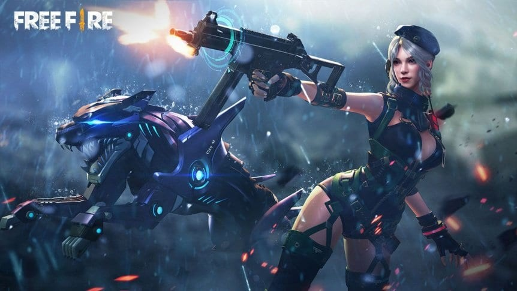

¿Qué es? |
El battle royale gratuito para celulares la rompe en Latinoamérica y cada vez tiene más jugadores. Te contamos de qué se trata.
La búsqueda puede resultar extraña para algunos, innecesaria para aquellos conocedores e inevitable para varios que escucharon el nombre y no saben a qué se refiere. ¿Qué es Free Fire? ¿Qué significa Free Fire? Y no se refiere a su significado en español, sino al nombre de un videojuego gratuito para celulares que no deja batir récords, tanto en cantidad de usuarios como en espectadores para sus torneos de deportes electrónicos.
Este videojuego desarrollado por Garena tiene mecánicas de Battle Royale, una especie de PUBG o Fortnite, que está disponible para smartphones con Android o iOS. El título se lanzó en su fase beta el 30 de septiembre de 2017 y en 2021 se convirtió en el primer título de su género en superar las mil millones de descargas en Google Play. Además, se coronó como el juego más exitoso en Sudamérica con más de 13 millones de descargas.
